Basic Format of CSS
In CSS we have following things:-
- Selector :- Selector is used to define the object that we want to apply CSS Property.
- CSS Code :- It is always written inside the curly brackets. ie. - "{"" & "}"".
-
CSS Declaration :- There are two styling elemtnts :-
- Property :- This shows that, what kind of CSS we want to apply.
- Value :- This show that what is the vlaue of that CSS Property.
color : red;
}
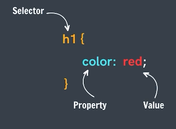
We Can visit following link to see all the CSS Properties :-
⋄ MDN CSS Properties
How to Include CSS to our HTML File
We Have three methods to include CSS to HTML :-
-
Inline CSS :- Writing Styles directly inline on each element. In this every property is separated by Semi-colon( ; ). Its drawback is, in this we have to style every html element.
<h1 style="color:red; background-color:white;">
This is the Inline CSS
</h1> -
Internal CSS :- Style is added using the <style>tage in the head section in the same document.It has the drawback that it only add style to only one page.
<!--This is head section-->
<head>
<!--Here CSS is written.>
<style>
h1{
color:red;
background-color:white;
}
</style>
</head>
<!--This is body section-->
<body>
</body> -
External CSS :- Writing CSS in a separate document & linking it with the HTML file. We use <link> tag in "head" tag to link html file to css_file. in link tag "rel" defines what type of relation does our "href" have with html document.
"index.html" file
<!--This is head section-->
<head>
<!--Here css_file is linked with html document.-->
<link rel="stylesheet" href="styles.css">
</head>
<!--This is body section-->
<body>
</body>"styles.css" file
h1{
color:black;
text-align: center;
}
Note :-
The Cascading Order is given below :-
Inline CSS > External & Internal CSS > Browser default
It means Inline CSS has the highest priority and it will override other styles.
Selectors
CSS selectors are like addresses that tell the browser which HTML elements to style. These are used to select a group of elements or a particular element for styling purpose.
Importance order of Selectors :-
ID >class>Element
Types of Selectors
There are different type of selectors :-
-
Element Selector :- : Targets all elements of a specific type.
p {
color: blue;
}This styles all <p> (paragraph) elements to have blue text.
-
class Selector :- : Targets elements with a specific class. We use "Full-stop" or "Period" ( . ) to select or define the class in CSS code.
.highlight {
background-color: yellow;
}This styles any element with the class highlight to have a yellow background.
-
ID Selector :- : Targets a single element with a specific ID. We use "hash" or "octothorpe" or "Numero sign" ( # ) to select or define a ID in CSS code.
# header {
font-size: 24px;
}This styles the element with the ID header to have a font size of 24px.
-
Universal Selector :- : To select everything in a document. We use "Asterisk" ( * ) to select or define all document in CSS code.
* {
Property : value;
} -
Descendant Selector :- : Targets elements that are inside other elements.
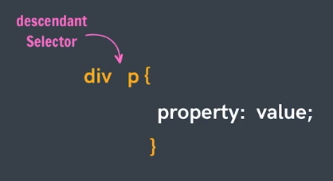
Note :- If we want to select a child of an id then we will use following method -index.html -
<div id="myId">
<p> This is a paragraph. </p>
</div>styles.css -
<!-- Method 01 -->
#myId p {
color: green;
}
<!-- Method 02 -->
div [id = "myId"] p {
color: green;
}output -
This is a paragraph.
Note :- It can be multi-level.
<!-- Here myId is level-1, ul is level-2, li is level-3, p is level-4. -->
# myId ul li p{
color: green;
} -
Adjacent Sibling Selector (or Adjacent Sibling Combinator) :- Selects an element that is immediately after another specified element.
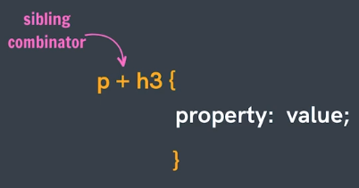index.html
<div id="myId">
<p> This is a paragraph. </p>
</div>
<p> This is adjacent paragraph to the myId div. </p>style.css
<!-- Here "ID = myId" and p are siblings then in p the style will be applied. -->
# myId + p {
color: orange;
}Output :-
This is a paragraph.
This is adjacent paragraph to the myId div. -
"Child Selector" or "Child Combinator" :- Selects elements that are direct children of a specified element.
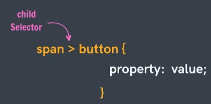<!-- Here p is the child of "ID = myId", then in p the style will be applied. -->
# myId > p {
color: orange;
}Differnce between "Descendant Selector" & "Child Selector"
The main difference between the child selector and the descendant selector in CSS is in the way they select elements based on their relationship in the HTML hierarchy.
Point Descendant Selector Child Selector Syntax " ancestor descendant " " parent > child " Description Selects all elements that are descendants of a specified ancestor element, regardless of how deep the descendants are nested. Selects only the direct children of a specified parent element. Example 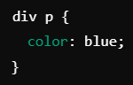 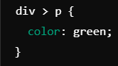 -
Attribute Selector :- Selects elements with a specific attribute or Selects elements based on the presence or value of a given attribute.
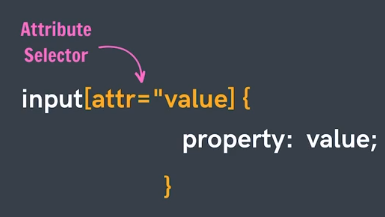<!-- Syntax: -->
HTML_Element [attribute = value] {
property: value;
}Example
input[type = "password"] {
background-color: yellow;
}
<!-- "OR" -->
input[type] {
background-color: yellow;
} -
Pseudo-class Selector :- Selects elements based on their state or position.
⋄ Pseudo-class selectors in CSS are used to define a special state of an element. They are prefixed with a colon (:) and are used to style elements based on their state, position in the document, or user interactions.
⋄ A Keyword added to a selector that specifies a special state of the selected element(s).
Examples :-
-
:hover:-
mouse over link.
a:hover {
color: #FF00FF;
}
<!-- It also can be used in other elements. -->
div:hover {
color: #FF00FF;
} -
:active:-
selected link.
a:active {{
color: #0000FF;
}
<!-- It also can be used in other elements. -->
button:active {{
background-color: hotpink;
} -
:visited:-
visited link.
a:visited {
color: #00FF00;
} -
:link:-
unvisited link.
a:link {
color: #FF0000;
} -
:checked:-
Selects every checked element
<!-- Here radio and label are siblings and we want to change in label. -->
input[type= "radio"]:checked + label {
<!-- Here Here it means that the radio which is checked, its sibling label will be styled. -->
color:red;
}Example :
Index.html
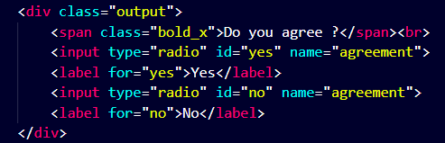
styles.css
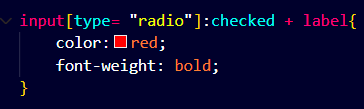
Output
Do you agree ?
-
:nth-of-type() :-
Selects every element that is described (In the code) element of its parent
<!-- We want to style 5th li of the list (ul) -->
ul>li: nth-of-type ( 5 ) {
background-color: red;
}
<!-- We want to style every even li of the list (ul) of id "MyList" -->
# MyList >li : nth-of-type ( 2n ) {
background-color: red;
}
Anchor Pseudo-classes
For Radio & checkbox
For normal use
-
-
Pseudo-element Selector :- Selects a specific part of an element.
A keyword added to a selector that lets you style a specific part of the selected element(s). ie> :-- ::first-letter - Add style into first letter of selected element.
- ::first-line - Add style into first line of selected element.
- ::selection - To style the selected mouse portion of the webpage.
h1::first-letter {
color:red;
}
CSS Cascading StyleSheets
Qs. :- What is cascade in CSS?
Ans :- The CSS Cascade Algorithm's job is to select CSS decoration in order to determine the correct values for CSS properties.
It is always applied on same element.
Note :- in above example always that style will be aplied which is written in the last.
Selector Specificity
Qs. :- What is Specificity?
Ans :- Specificity is an algorithm that calculates the weight that is applied to a given CSS declaration.
It is a three digit no., Which is calculated by following figure :-
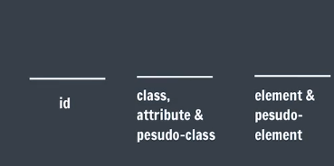
In above figure "id" defines the hundredth place, "class" defines the Tenth place & element desides the Unit's place.
It means folling order is used for cascading :-
- ID > Class > Element
- More Selectors > Less Selectors.
- If Specificity = same
Then apply cascading.
Example :-
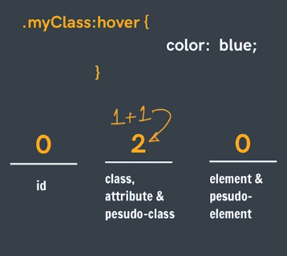
Inline Specificity
Inline styles are more specific than id.
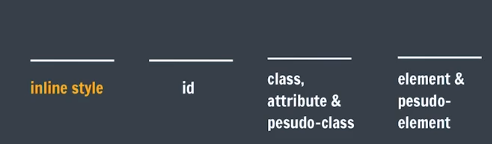